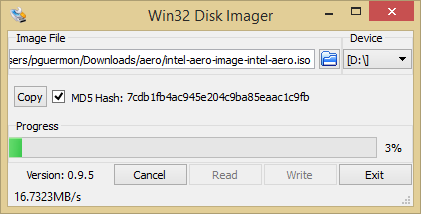
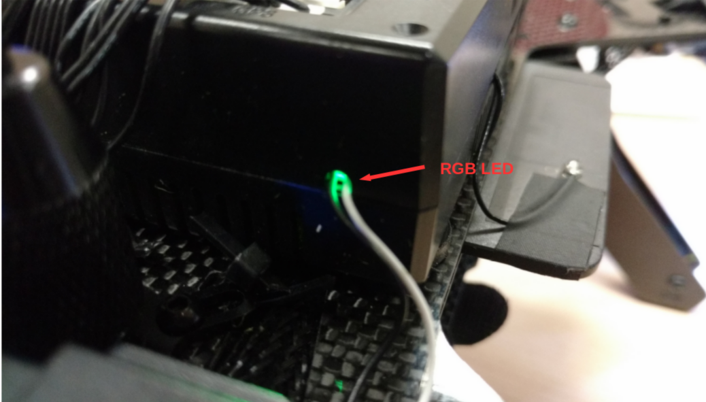

Update Intel Aero software¶
The Intel Aero Compute Board and the RTF Kit comes already flashed from factory and ready to use. The version may vary and it's recommended for developers to update to the last available version.
There are 4 main components that may need to be updated: Operating System, BIOS, FPGA, Flight Controller (aerofc).
Check current version¶
In order to know what needs to be updated you may check what's already currently installed on your board. Connect to the board via WiFi or USB and use the following command on the terminal:
# aero-get-version.py BIOS_VERSION = Aero-01.00.12_Prod OS_VERSION = v1.4 AIRMAP_VERSION = 1.8 FPGA_VERSION = 0xc0
This should show the 3 important versions: OS, BIOS and FPGA. The flight controller currently doesn't report its version this way.
Download¶
The last software version can be downloaded from Intel's Download Center. You will need to download the "Operating system image" and the "Capsule/BIOS" from that page.
Tip
The Operating system image is updated much more frequently than the BIOS. If you already have the last BIOS flashed you don't need to download and flash it again. See Check current version for instructions on how to check version currently installed.
As of this writting the OS Image is at version 1.4 and the BIOS at version 1.00.12. After downloading it's advised to check if the download was successful by checking its md5sum. It must match the md5sum published on the Download Center.
Check md5sum¶
Linux and macOS¶
Open a terminal and execute the following command below. The md5sum can be seen in the line following it.
$ md5sum ~/Downloads/intel-aero-image-1.4.iso 9a1706addd08eb8bea3a4e6dbc58b724 /home/<user>/Downloads/intel-aero-image-1.4.iso
The command above assumes the download has been done to your Downloads directory, which is usually the default location but may vary across distros.
Windows¶
You will need to download and install Win32 Disk Imager. This software can also be used later below if you are following the Windows-specific instructions. See picture below that contains the "MD5 hash" for an earlier version of the OS image.

Write OS image to USB drive¶
The method to write the image to the USB drive will depend on what Operating System you are using. Below you can find options that work on each of Linux, Windows and macOS.
Linux, Windows and macOS¶
Follow these steps:
- Download and install Etcher. follow specific instructions on their website for installation
- Launch Etcher
- Select the downloaded OS image file
- Select the USB drive where it will be written to
- Click on "Flash" button
Wait for the image to be written and verified.
Linux and macOS (alternative)¶
It's possible to use the command line to write the image to a USB drive as below. Note that the letter X below should be replaced by the letter of your USB drive (be careful not to use the wrong drive since it can overwrite your main disk).
dd if=~/Downloads/intel-aero-image-1.4.iso of=/dev/sdX bs=1M
Windows (alternative)¶
If you are using this method, you need to use Win32 Disk Imager as detailed in Check md5sum section. After checking the download is correct proceed with the following steps:
- Select your USB drive
- Click on "Write" button
Flash OS image¶
In order to flash a new OS image you can connect to it either via WiFi or USB. Since the USB port will be needed to connect the USB drive it's recommended to use WiFi though. Follow the instructions on XXXXX to connect establish the network connection and connect via ssh. The commands below assume you are already connected to the Compute Board.
Based on the version you currently have installed on the Compute Board the method varies since recent versions are always improving the process.
v1.2 (or greater) via WiFi¶
Just one command is needed:
# aero-reboot-update.py
This will verify you have a new OS image on the USB drive and reboot in update mode.
v1.2 (or greater) via USB¶
If you are connected via USB you have to bypass the check done by the command on the previous section since the USB is being used for usb-ethernet connection:
# aero-reboot-update.py -f
After seeing the message that the system is rebooting, rapidly connect the USB drive so the system can reboot into it.
Before v1.2¶
Before version 1.2 the command aero-reboot-update.py used on the previous
sections didn't exist. You will need to manually access the USB drive to
execute that command directly from the new OS image.
# mkdir -p /tmp/{iso,newroot} # mount -o ro /dev/sda1 /tmp/iso # mount -o loop,ro /tmp/iso/rootfs.img /tmp/newroot # /tmp/newroot/usr/sbin/aero-reboot-update.py
Just like on v1.2 (or greater) via USB you should
pass the -f flag to the last command if you are connected via USB.
Status progress¶
The updated process gives feedback to the user in some forms:
- If you have an HDMI screen connected, you will see the progress of the update as text on it
-
Internal RGB LED on Compute Board will blink according to the different phases:
- When the board is turned on the LED is green
- Before rebooting the RGB LED will become yellow: this means the board started the reboot progress. It takes around 20 seconds for this command to take effect and thus change from yellow to green again. If the BIOS version is older than 1.00.12, the reboot command may get stuck. You can safely remove power and power it on again if that happens: it will proceed with the update process
- When board is rebooted the RGB LED becomes green again
- During the update process the RGB LED will blink red once a second (1Hz). The time taken by the update process may vary, but should take around 3 minutes.
- When the Compute Board is updated the RGB LED will blink fast at 10Hz for 5 seconds and reboot. After that the update process is done and you should be greeted with the new version
-
On the RTF kit there are additional blue LEDs next to the power button. They will follow the same blink pattern as above with the exception that they don't change color
Tip
On the RTF kit it may be difficult to see the internal RGB LED. You can look to the hole through each the FAN cable is passing in order to check it's. See the image below for reference. You can also use your hand putting it near to the hole to reflect the light and monitor the progress.

BIOS¶
The BIOS update works by installing the downloaded package rpm package. This
will install the update file that will be used on next boot to update it. You
need to follow these steps:
- Copy the file to Aero Compute Board: you may use
scporrsync. Example:
$ scp ~/Downloads/capsule-01.00.12-r0.core2_64.rpm intel-aero.local:
- Install and reboot
# dnf install capsule-01.00.12-r0.core2_64.rpm # reboot
During the next boot the BIOS will detect the update and flash the new version. If you have HDMI output connected you can see the update progress. After logging in again, check the current version as above to make sure everything worked.
FPGA¶
The OS image comes with the recommended versions of the FPGA firmware, but during
the install process it doesn't flash it automatically since the user may choose
what version to use depending on his needs and also can modify and have his own
firmware: the FPGA source
is open source too. Check the available versions of the fpga under /etc/fpga/:
aero-rtf.jam: this is for use with RTF kit during normal operationaero-rtf-recovery.jam: this is for use with the RTF kit under special circunstances: it allows the Compute Board to instruct the Flight Controller to stop on bootloader so we can flash new versions of the firmware even if the previous version stopped responding due to a bad updateaero-compute-board.jam: this should be selected if using only the Compute Board and not the Flight Controller. Note that the labels that accompany the Compute Board have no meaning. Check the official documentation for what each pin is connected to.
You can flash the FPGA with the command below in which <firmware> is one of
the firmwares above.
# jam -aprogram /etc/fpga/<firmware>.jam
Flight Controller¶
This only applies to the RTF kit since the Compute Board doesn't come with the flight controller which is called aerofc. The RTF kit comes pre-flashed and calibrated with PX4, but it's recommended to update to the same version that comes in the OS image to get the latest improvements.
The current version of OS image comes with both PX4 and ArduPilot firmwares
and the user can choose which one he prefers. They are located in /etc/aerofc/.
Commands below illustrate how to flash each of them:
PX4:
# aerofc-update.sh /etc/aerofc/px4/nuttx-aerofc-v1-default.px4
ArduPilot:
# aerofc-update.sh /etc/aerofc/ardupilot/arducopter-aerofc-v1.px4
After this command the flight controller (not the Compute Board) is automatically rebooted with the new firmware.
Flight stack developers may want to flash the current version being developed rather than the stable version that comes with the OS image. For that it's recommended to follow the steps from each of them: PX4 and ArduPilot.